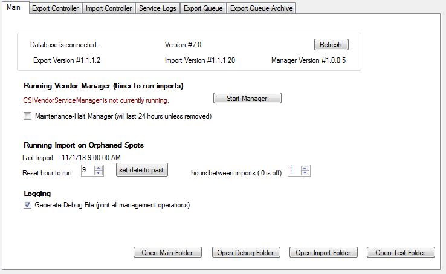
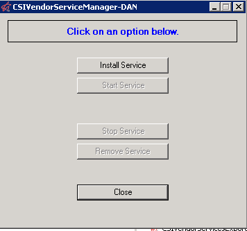
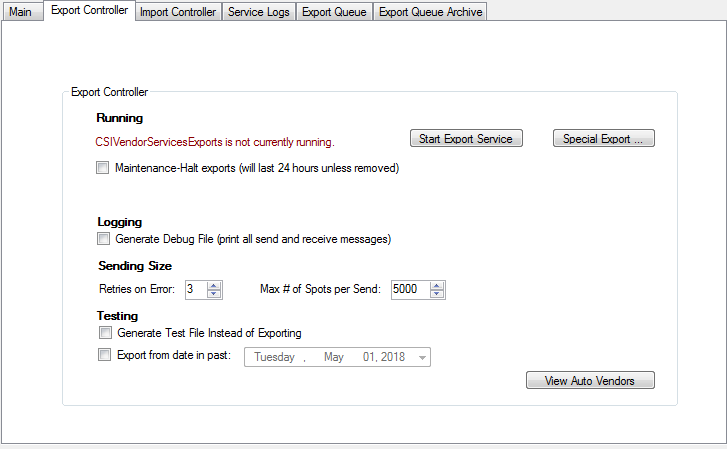
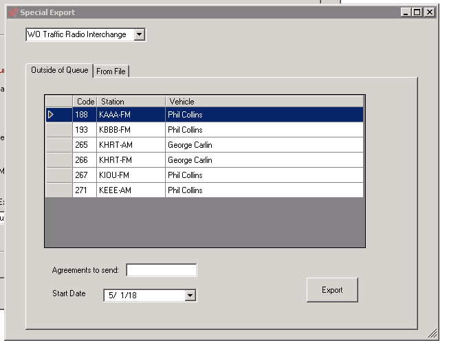
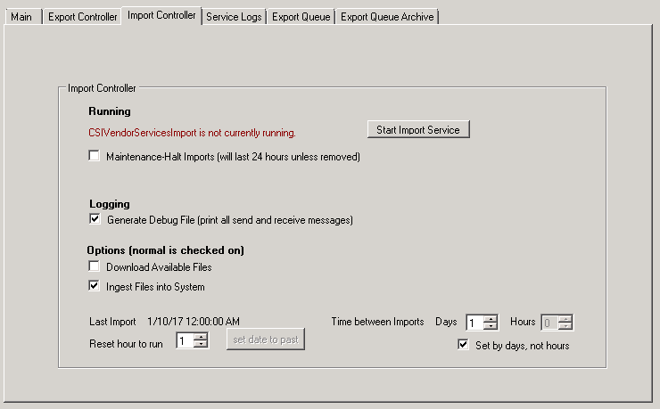
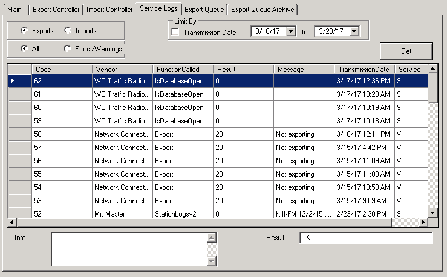
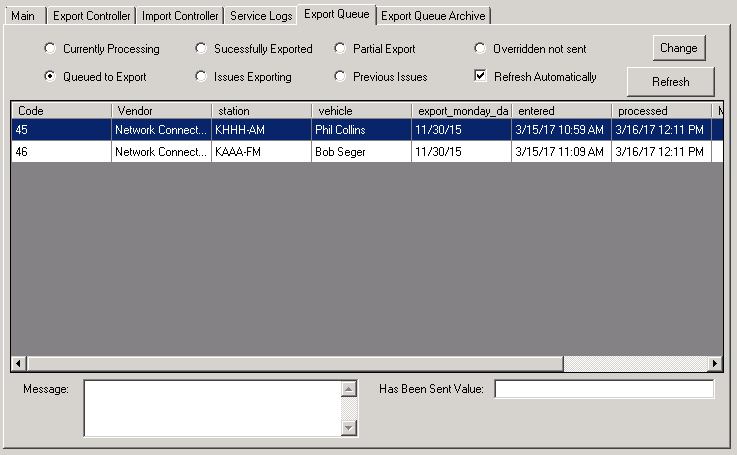
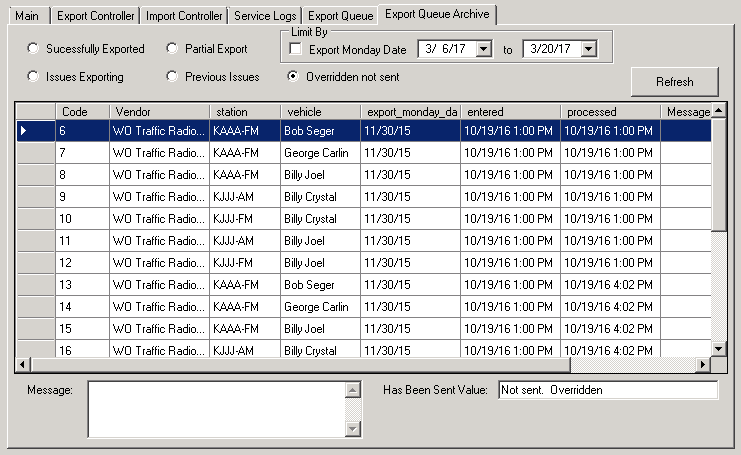

CSI Vendor Service Utility
The CSI Vendor Service Utility is used to configure and monitor the vendor services. It is run from the web server using a shortcut that points to CSIVendorServiceUtility.exe.
This section describes each tab on the utility.
Main
The Main tab contains basic information about the system and can be used to start the Vendor Manager.

The top section of the “Main” tab is informational and displays the following status and version number information:
- Whether the database is connected to the service or not. If the database is not connected, the following warning message will be shown: “Problem with the connection string: A network-related service or instance-specific error occurred while establishing a connection to SQL Server.” If the database is not connected, please contact Counterpoint for assistance. If the database is connected, and the web database version number is detected, it will be shown in the version number field. If the database is connected, but the database version number could not be detected, it will show “Database Version # Unknown” instead. In the image above, the database is successfully connected and the version number is 7.0.
- The Export, Import, and Manager Version Number. These values are pulled from CSIVendorServicesExport.exe, CSIVendorServicesImport.exe, and CSIVendorServiceManager.exe, which are stored in the same folder as this utility. If the version numbers could not be detected, it will show “Version # Unknown”.
If a change was made that affects the values shown here (such as installing a new export executable), press the Refresh button to see the changes. Note that if the database was not connected, then pressing Refresh caused it to show as connected, you will need to close the utility and restart it in order for the other tabs to be usable.
The lower section of the Main tab allows the user to control the Vendor Manager. The Vendor Manager handles the task of running the import program at set times so that it can retrieve any posting information that is available for importing. It is essentially a timer that runs in the background and that wakes up after a set interval of time to see if it needs to run the import program. The Vendor Manager also moves export records out of the queue and into the archive when they are 2-3 weeks old or older and deletes export debug files and import history files when they are six months old.
Important Note: The Vendor Manager should always be left running.
Note that when you change any control in this utility, it turns red. That means it hasn’t been saved yet. Leaving that box will save the value and turn it from red to black.
Manager Controls
Start Manager: Pressing the Start Manager button will show the Manager service start screen. This can also be shown by pressing the Open Main Folder button, then right clicking on CSIVendorServiceManager.exe and running it as an administrator. A few of the options on the screen will be different depending on which method is used to launch it, as described below.
CSI Vendor Service Manager Start Screen
A picture of the CSI Vendor Service Manager start screen is shown below. This screen can be used to install, start, stop, and remove the service.

Install Service: If the CSI Vendor Service Manager service needs to be installed (because it has not been installed), the Install Service button will be the only available button. Press the Install Service button to install the service.
Start Service: Pressing Start Service will start the CSI Vendor Service Manager as a service. Note that if the “Maintenance Halt” checkbox is checked, the Start Service button will not be shown, as the service cannot be started while “Maintenance Halt” is checked. When this is the case, and the service needs to be started, uncheck “Maintenance Halt” then start the service.
Stop Service: The Stop Service button is only available when the CSI Vendor Service Manager is started by double clicking the executable. (When launching this screen from the Start Manager button, the Stop Service option is hidden.) While the Stop Service button is available when running the executable, it should not be used to stop this form. Instead, if it needs to be stopped (for example, to install a new executable), use the Maintenance Halt checkbox on the Main tab (described below).
Remove Service: This removes the service if the service needs to be removed for some reason.
Additional Manager Controls
Maintenance-Halt: This is the only way the vendor manager should be turned off because it may be in the middle of the task and so should not be shut down any other way. By clicking this checkbox, the manager will turn itself off. Note, though, that it won’t check this value if it’s in the middle of a task, or if “asleep”, so you may have to wait the amount of time in the number box below before the manager turns off.
Generally, the vendor manager would only need to be turned off to install a newer version. In that case, check this box and wait for the manager to say it isn’t running. Install the new executable, uncheck the “Maintenance-Halt” checkbox, and then press the “Start Manager” button, and then “Start Service”. Note that you can’t start the manager while this is checked. This value in the database is automatically removed after 24 hours, but you still have to press the “Start manager” button and “Start Service”.
Interval in minutes to test if import needed: The Web Vendor Manager is essentially a timer. It goes to sleep and wakes up every five minutes to see if it’s time to run the import (using the values from the Import Controller tab). Five minutes is the default, but this can be changed by editing this field. Note that even when set to five minutes, the import doesn’t happen every five minutes. The import time is defined on the Import Controller tab. The “interval” setting only handles when the manager checks to see if it is time to run the import. (For the value to be “saved” when changed, move control out of the number box.)
Running Import on Orphaned Spots: “Last Import” is the last date and time the manager tried to import orphaned spots (spots returned from a service but that could not be matched to a web spot using the astCode). The hour that it is run is shown next to “Reset Hour to Run”. Changing the “Reset Hour to Run” value will change this last import time, allowing you to change the time of day that it is run. The “Set Date to Past” button sets the date to the past so that the import will run in the next five minute cycle. “Hours Between Imports” is the span in hours to wait to rerun this import after the last one was run. In the example picture, the 1 means to run every hour, so it would run again at 10:00:00 am. 0 is off. A common setting is 24, which is for once a day.
Logging – Generate Debug File (print all management operations): When checked on, additional information is logged to the CSIVendorServiceManagerLog debug file. This save location of this file can be accessed by pressing the “Open Debug Folder” button at the bottom of the screen.
Menu Buttons
Open Main Folder: Opens the main web folder, which is useful for updating executables.
Open Debug Folder: Opens the folder that holds all the log files besides the import logs.
Open Import Folder: Opens the import folder, where the import logs are stored.
Open Test Folder: If you chose the “Generate test file” option on the Export tab, the files will be in this folder.
Export Controller
The Export Controller tab is used to configure exports. Exports are sent from the affiliate website to a vendor when an affiliate user exports to the website and spots are sent to the website. Exports are then sent to vendors as needed whether or not any of those newly exported spots were to a web vendor.
Changes to agreements and web vendors are also sent at this time, but are updated whether or not any spots are actually updated.
The Export Controller tab contains the following sections:
- Running
- Logging
- Sending Size
- Testing

Start Export Service: Press this button to run the export service manually. One reason to run manually would be if there were errors in the previous export. This would attempt to resend those failed exports.
Special Export: When pressing this button, it brings up a popup with two tabs: “Outside of Queue” and “From File”, as shown below.

Outside of Queue: This tab allows a vendor to be chosen so that a force send can be performed for a specific agreement and week. This could be used for example if a vendor says they never received the spots for an agreement, allowing the data to be re-sent to the vendor again without having to be sent again from the affiliate system.
From File: This can only be used with assistance from Counterpoint. This option is used to read the spot data from a file to send the data directly to the vendor without needing access to the affiliate database.
Maintenance-Halt: Like the Vendor Manager “Maintenance-Halt” checkbox, this is the only way exports should be turned off. For instance, if needing to replace the exports executable with a newer version, check this box and wait for the label to say “CSIVendorServicesExports is not currently running”. Install the new executable and then uncheck this checkbox. You may now run it by pressing the “Start Export Service” button if so desired.
Note that if you check this box and don’t uncheck it, no exports will go out to vendors when a user exports from the affiliate program until 24 hours has passed.
Logging
Generate Debug File: Checking this box will create a “debug file” showing all the send and return information. The files are stored in “VendorServices-Debug Files”. Each file is for the day and the vendor. Example: “WideOrbit-DebugLog_07-15-16.txt”.
These files will be automatically deleted after six months.
The “Generate Debug File” option should be checked on as it helps with debugging and logs all spots sent to a vendor. If the program is running slowly, you might consider turning this off.
Sending Size
Retries on Error: This setting determines how many times the program should retry if it received an error during the send. The default value is three.
Max # of Spots per Send: Some web vendors may only be able to process a certain number of spots in a single send. The default is 5000.
Testing
Generate Test File Instead of Exporting: This option is used for testing. Check this box and then export using the Start Export Service button to create files of what would have been sent. Each file is stored in “VendorServices-Test Files”. Each file is for a day and a vendor, for example, “WideOrbit-TestFileLog_07-15-16.txt”.
When this option is checked, nothing will get exported to any vendor. Also, everything in the export queue is still marked as needing to go after this “test export”.
Export from date in past: Exports only happen for dates in the future. If for some reason you have unsent exports that are in the past, you can set this to allow those exports to go out.
View Auto Vendors: When clicked, this button will bring up a popup menu that shows which vendors can set themselves with delivery rights for an agreement.
Import Controller
The Import Controller tab is used to configure the import controller that handles importing data from vendors to the web database.
The Import Controller tab contains the following sections:
- Running
- Logging
- Options

Running
Start Import Service: Used to start the import service manually.
Maintenance-Halt: This is the only way the imports should be turned off, for example, when installing a newer version of the import executable. To turn off the import service, check this box and wait for the label to say “CSIVendorServicesImport is not currently running”. Install the new executable and uncheck this checkbox. You may now start the import service by pressing the “Start Import Service” button if so desired.
Note that if you check the “Maintenance-Halt” checkbox and don’t uncheck it, no imports will be requested from vendors for 24 hours.
Logging
Generate Debug File: Checking this box will create a “debug file” showing all the send and return information. The files are stored in “VendorServices-Imports”. There is one log file per day, with all vendors included. Example filename: “CsiVendorImportLog_07-15-16.txt”. These files will be automatically deleted after six months.
Options
There are two parts of an import: downloading the information and creating a file out of the information, and opening that file and ingesting the information into the database. These two options cover these two separate actions. Important Note: under normal circumstances, both of these options should be checked on.
Download Available Files: Generally, you want to download the information from the vendors. But it’s possible to get a file generated from another computer and read that in (see the next checkbox). To only download the available files without ingesting the files into the system, check “Download available files” on, and uncheck “Ingest files into the system”.
When downloading, files are created in “VendorServices-Imports” (followed by the vendor service name). Each web vendor gets a folder and inside that folder the file gets written, for example, “XDSBreak-1111-2016-07-15.xml”. Inside this web vendor folder are two subfolders: “Completed” and “Unread” (described below).
Ingest Files into System: Generally, after downloading you want to ingest the information. To ingest the files only without downloading them, check the “Ingest files into system” checkbox and uncheck “Download available files”.
Once the file is ingested it is moved out of the web vendor folder into the “Completed” subfolder. If there were an issue, the file is moved to the “Unread” subfolder instead.
Last Import: Indicates when the last set of imports was done.
Time between Imports: This is the value the vendor manager uses to determine how often to run the import executable. The default setting is one day, but you can set a number of hours if so desired.
Set by days, not hours: Works with the “Time between Imports” number box.
Reset hour to run: Used to change the hour that the import runs. “1” means “1am”. You may want to change the hour because:
- The base hour is based on when the import is first run. This may not be when you want the import to recur.
- The vendor manager wakes up every 5 minutes (by default), so it is possible that the import is set to go at 1am, but will now launch at a different time, as after a number of imports, the time the import goes out may not be what you desire.
Set date to past: If the last import date was thirty minutes ago, and the “time before imports” is set to one hour or greater, pressing the “start import service” button won’t do anything because it isn’t time to run. Press this button to set the last import enough in the past so an import will happen.
Service Logs
The Service Logs tab displays information about all requests and responses sent through either vendor or station services.

Exports - Imports: Select the Exports or Imports radio button to choose to view Export or Import information.
All - Errors/Warnings: Select whether to view all records or only errors and warning messages.
Transmission Date: The standard retrieval will be the last 100,000 records. If you’d rather see the data by a date period, check the “Transmission Date” checkbox and choose the date range.
Get: Press the “Get” button to retrieve the information.
Export Queue
The Export Queue tab displays information about the exports from the affiliate system that are stored in the queue.

Exports are stored in a table called “WebVendorExport”. Each record is a part of the queue to be exported, but it’s also a log of what happened in that export.
A record is only placed here during an export from the affiliate system. It represents one week of spots for an agreement that is set to go out to a web vendor. The value for the “HasBeenSent flag when the export is first placed in the queue is set to “Unsent”.
When the export is run, it looks for any “Unsent” records for a week that is current or in the future and then sends it out. It then sets “HasBeenSent” to “Sent Successfully”. If there is an issue, “HasBeenSent” is set to “Issue”. When an export runs, it looks not only for “Unsent”, but also for any records marked “Issue”. It takes the “Issue” record, copies it with a “HasBeenSent” flag set to “Unsent” and changes the “HasBeenSent” value to “Previous Issue”. This way, it will send the issue record out again, but keep a record of the previous send.
If there are multiple records for the same agreement/week, only one record gets sent and marked as “Sent Successfully”. The other record gets set to “Overridden and not set”.
Export Queue Controls
Currently Processing: These are the records that are currently being exported.
Queued to Export: The records that are not sent, have an issue, or are waiting.
Successfully Exported: The web vendor returned an “OK” after getting the spots.
Issues Exporting: The record has an issue. This could be that the vendor returned a problem, never responded, or there’s an issue in the exporting code.
Partial Export: Some vendors immediately issue an OK when the system exports to them, but others do not. The system tries several times during the export to check for the OK, but if it is not returned in a timely manner, the “HasBeenSent” flag is set to “Waiting”. On the next export, these records won’t be re-sent, but will be tested to see if the vendor has finished processing them. This is one reason to manually run the export from the “Export Controller” tab.
Previous Issues: “HasBeenSent” is set to “Previous Issue”.
Overridden not sent: “HasBeenSent” is set to “Overridden and not set”.
Refresh Automatically: This is useful when an export is running and you want to watch the changes to the database. It is problematic when you try to choose an individual record to see the “Message” and “Has Been Sent Value” in the text boxes below the grid, because the records will constantly change. In this case, uncheck the box, which will also enable the “Refresh” button.
Change: This is how to change the “HasBeenSent” value. Note the Code number and choose this button. Input the code and choose the new “HasBeenSent” value.
- Export: This agreement/week will be re-sent.
- Force to export first: This agreement/week will be the first to go out in the queue.
- Overridden don’t send: Don’t sent this agreement/week.
Refresh: This is only enabled when “Refresh Automatically” is not checked on. Use this button to manually refresh your view.
Export Queue Archive
The Export Queue shows what’s in the queue and what’s been done within the past 2-3 weeks. After that date, it’s moved from the Export Queue to the Export Queue Archive (pictured below).

The selectivity and buttons on the Export Queue Archive tab are nearly identical to the Export Queue. Refer to the Export Queue section for more information. The unique control (Limit By) is described below.
Limit By
Because the archive could get very large, not all archive values are shown. The Limit By selection allows you to limit the records shown by date.